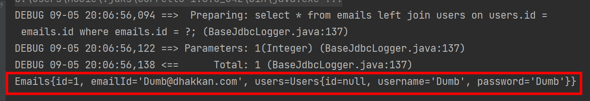

搭建Mybatis框架
导入依赖
MyBatis框架需要导入org.mybatis依赖，可以github下载或maven获取
<!-- mybatis依赖 -->
<dependency>
<groupId>org.mybatis</groupId>
<artifactId>mybatis</artifactId>
<version>3.5.7</version>
</dependency>
除此之外还需要对应的数据库驱动，这里使用Mysql
<!-- mysql驱动 -->
<dependency>
<groupId>mysql</groupId>
<artifactId>mysql-connector-java</artifactId>
<version>5.1.3</version>
</dependency>
使用框架 == 导入jar包依赖 + 设置配置文件
所以搭建Mybatis框架第二步是设置配置文件，配置文件可以随意命名。
设置配置文件
在SSM框架整合时，Mybatis配置文件将由Spring接管
<?xml version="1.0" encoding="UTF-8" ?>
<!DOCTYPE configuration
PUBLIC "-//mybatis.org//DTD Config 3.0//EN"
"http://mybatis.org/dtd/mybatis-3-config.dtd">
<configuration>
<environments default="development">
<!-- environments标签处理有关数据库连接的配置
environments可以下属多个environment,但只有一个被使用
属性: default 默认使用的环境id
-->
<environment id="development">
<!--
environment：配置某个具体的环境
id是environment的标识，与environments的default对应
每个环境都由事务管理器和数据源组成
-->
<transactionManager type="JDBC"/>
<!--
transactionManager: 事务管理器-设置事务管理方式
属性： type = "JDBC|MANAGED"
JDBC: 执行SQL时使用JDBC原生的事务管理方式，提交需要手动执行
MANAGE: 被管理，例如被Spring管理
-->
<dataSource type="POOLED">
<!--
dataSource: 数据源
属性： type = "POOLED|UNPOOLED|JNDI"
POOLED: 使用数据库连接池
UNPOOLED: 不使用数据库连接池
JNDI: 使用上下文中的数据源-->
<!-- property: 配置连接信息-->
<property name="driver" value="com.mysql. jdbc.Driver"/>
<property name="url" value="jdbc:mysql://localhost:3306/security"/>
<property name="username" value="root"/>
<property name="password" value="atmujie"/>
</dataSource>
</environment>
</environments>
<!-- mappers标签引入映射文件-->
<mappers>
<mapper resource="mappers/UserMapper.xml"/>
</mappers>
</configuration>
配置文件模板可以直接在Mybatis在github的官方文档中找到，名字随便，一般是mybatis-config.xml
就此，一个使用mybatis的程序搭建完毕
创建mapper接口与接口配置文件
创建接口
Mybatis的功能全部由mapper接口和接口映射文件共同组成
Mybatis不需要开发人员实现接口，只需要创建接口，并将接口对应到具体sql语句
public interface UserMapper {
Users selectUser();
List<Users> selectAllUser();
int insertUser();
}
接口很简单
接口配置文件
接着是对应接口配置文件
一个接口对应一个配置文件
<?xml version="1.0" encoding="UTF-8" ?>
<!DOCTYPE mapper
PUBLIC "-//mybatis.org//DTD Mapper 3.0//EN"
"http://mybatis.org/dtd/mybatis-3-mapper.dtd">
<mapper namespace="com.atmujie.mybatis.mapping.UserMapper">
<!-- namespace 指明该配置文件对应的接口-->
<!-- int insertUser();-->
<insert id="insertUser">
insert into security.users(username, password) value("admin","root");
</insert>
<!-- List<Users> selectUser();-->
<select id="selectUser" resultType="com.atmujie.mybatis.pojo.Users">
select * from users where id = 1;
</select>
<!-- List<Users> selectAllUser();-->
<select id="selectAllUser" resultType="com.atmujie.mybatis.pojo.Users">
select * from users;
</select>
</mapper>
接口名和配置文件名最好一致
接口方法和配置文件的id字段完全一致
增删改均返回受影响的行数，只有查询语句需要将查询结果映射到实体类，通过resultType属性设置
// 实体类
public class Users {
Integer id;
String username;
String password;
}
当实体类属性名等于数据库字段名是，使用resultType直接映射。当两者不同时，需要使用resultMap设置映射关系
使用Mybatis
使用Mybatis的步奏是固定的，可以直接写成工具类
// 加载配置文件，以流的形式
InputStream resourceAsStream = Resources.getResourceAsStream("mybatis-config.xml");
// 加载sqlSession工厂生成器
SqlSessionFactoryBuilder sqlSessionFactoryBuilder = new SqlSessionFactoryBuilder();
// 获取sqlSession工厂对象
SqlSessionFactory sqlSessionFactory = sqlSessionFactoryBuilder.build(resourceAsStream);
// 获取sqlSession
/*参数true指开启事务自动提交，不传入参数则需要手动提交*/
SqlSession sqlSession = sqlSessionFactory.openSession(true);
// 获取对象接口并生成实现类
/*通过传入mapper接口，mybatis自动根据接口配置文件生成实现类
* 可以直接使用该实现类执行方法
* 封装工具类只需传入接口，返回实现类
*/
UserMapper mapper = sqlSession.getMapper(UserMapper.class);
// 通过实现类执行方法
mapper.insertUser();
优化Mybatis使用
导入并使用properties配置文件
Mybatis可以导入.properties配置文件实现对mybatis-config.xml配置数据源的设置
# jdbc.properties
jdbc.driver = com.mysql.jdbc.Driver
jdbc.url = jdbc:mysql://localhost:3306/security
jdbc.username = xxx
jdbc.password = xxx
只需在mybatis-config.xml中使用properties标签绑定jdbc.properties即可
<configuration>
<!-- 绑定配置文件-->
<properties resource="jdbc.properties"/>
...
</configuration>
设置映射实体类别名
在最原始的使用方法中，查询语句需要指定一个完整的实体类路径作为映射对象，比如：
<mapper namespace="xxx">
<!-- Users selectUser();-->
<select id="selectUser" resultType="com.atmujie.mybatis.pojo.Users">
<!--com.atmujie.xxx.xxx就是完整的实体类路径-->
select * from users where id = 1;
</select>
</mapper>
这样作一旦查询多了就很麻烦，所以mybatis支持通过给完整实体类路径设置别名的方式，简化代码
通过在mybatis-config.xml【mybatis核心配置文件】中配置typeAliases标签实现
<typeAliases>
<typeAlias type="com.atmujie.mybatis.pojo.Users" alias="Users"/>
</typeAliases>
属性：
- type【必须】: 完整的实体类路径
- alias【可选】：别名，可以随意设置，如果不写这个属性，默认以实体类类名作为别名
此时映射文件就可以这样写
<select id="selectUser" resultType="Users">
<!--resultType字段被简化为别名-->
select * from users where id = 1;
</select>
select语句必须要指定结果映射，Mybatis默认设置了一些类型别名
不区分大小写，基本和类型名一致
| 别名 | 映射的类型 |
|---|---|
| _byte | byte |
| _char (since 3.5.10) | char |
| _character (since 3.5.10) | char |
| _long | long |
| _short | short |
| _int | int |
| _integer | int |
| _double | double |
| _float | float |
| _boolean | boolean |
| string | String |
| byte | Byte |
| char (since 3.5.10) | Character |
| character (since 3.5.10) | Character |
| long | Long |
| short | Short |
| int | Integer |
| integer | Integer |
| double | Double |
| float | Float |
| boolean | Boolean |
| date | Date |
| decimal | BigDecimal |
| bigdecimal | BigDecimal |
| biginteger | BigInteger |
| object | Object |
| date[] | Date[] |
| decimal[] | BigDecimal[] |
| bigdecimal[] | BigDecimal[] |
| biginteger[] | BigInteger[] |
| object[] | Object[] |
| map | Map |
| hashmap | HashMap |
| list | List |
| arraylist | ArrayList |
| collection | Collection |
| iterator | Iterator |
以包为单位引入映射实体类
当项目中存在很多实体类时，使用typeAliases标签下的typeAlias子标签仍然麻烦
好在typeAliases下的package标签可以直接设置整个包
<typeAliases>
<package name="com.atmujie.mybatis.pojo"/>
</typeAliases>
如此作，pojo目录中的所有实体类都被设置了和实体类名相同的别名
注意：Mybatis核心配置文件中的标签存在先后顺序
properties，settings，typeAliases，typeHandlers，objectFactory，objectWrapperFactory，
reflectorFactory，plugins，environments，databaseIdProvider，mappers
顺序不能错，错了idea会有提示
批量设置映射配置文件
mybatis核心配置文件的mappers标签有两个子标签，mapper和package
mapper标签只能映射一个配置文件
<mappers>
<mapper resource="org/mybatis/example/BlogMapper.xml"/>
</mappers>
而package标签可以映射整个目录
<mappers>
<package name="com.atmujie.mybatis.mapping"/>
</mappers>
但package标签有两个要求
1、mapper接口所在的包要和映射配置文件所在包一致。
2、mapper接口和映射配置文件的名字一致
Mybatis获取参数的两种方式
Mybatis获取参数的方式有两种${}和#{}
${}: 对应JDBC中拼接的方式select * from users where username="${}";相当于
select * from users where username=" + username + ";所以
${}需要和拼接sql一样，在传入字符参数时需要加引号
#{}：对应JDBC中预编译sql的方式。可以防止sql注入select * from users where username=#{};相当于
select * from users where username=?;无需加引号，一般情况都使用
#{}获取参数
获取单个参数
当传入单个参数时
Users selectUser(int id);
#{}中无需任何内容，写什么都不算错
<select id="selectUser" resultType="Users">
select * from users where id = #{};
</select>
获取多个参数
当传入多个参数时，参数保存在名为arg和param的map中,#{}必须使用其一作为键
arg为arg0,arg1…
<!-- Users login(String username,String password);-->
<select id="login" resultType="Users">
select * from users where username=#{arg0} and password=#{arg1};
</select>
或者param1,param2…
<!-- Users login(String username,String password);-->
<select id="login" resultType="Users">
select * from users where username=#{param1} and password=#{param2};
</select>
自定义Map
传入多个参数可以直接将参数封装成Map传入，这样#{}中的键名就是Map的键名
Users login(Map<String,String> map);
传入实体类
也可以直接传入实体类，#{}中的键名是实体类属性名
Users login(Users users);
@param注释
使用@Param可以直接指定参数对应的键名，是最实用的办法
Users login(@Param("username") String username,@Param("password") String password);
<!-- Users login(String username,String password);-->
<select id="login" resultType="Users">
select * from users where username=#{username} and password=#{password};
</select>
注意：一旦映射配置文件出现一个多参数处理，那么单参数jie处理也要使用加入键的方式传递参数
否则报错
返回查询结果
对于单个结果，可以直接返回给实体类。
对于多行结果，可采用List<实体类>、Map<String,Object>分别封装为List或者Map
其中Map较为特殊
当处理单行结果时
<!-- Map<String,Object> selectIdUser(@Param("id") Integer id);-->
<select id="selectIdUser" resultType="Map">
select * from users where id=#{id};
</select>
结果为：
当处理多行结果时
可以采用两种方式：
- 1、
List<Map>返回List - 2、使用
@MapKey注解
@MapKey("id")
Map<String,Object> selectIdUser();
<!-- Map<String,Object> selectMapUser();-->
<select id="selectMapUser" resultType="Map">
select * from users;
</select>

@MapKey注解会以指定的value为键，以一条完整的结果为值，返回一个Map
特殊SQL处理
一般来说接收参数使用#{}最好，但总有例外
模糊查询
select * from users where username like "#{}%"
以上就是一个例子
%号应该在引号中，但#{}不能被引号包裹，所以报错。
修改：
1、使用concat函数拼接
select * from users where username like concat(#{},"%")
2、使用${}【不推荐，会造成sql注入】
select * from users where username like "${}%"
3、拼接百分号
select * from users where username like "%"#{}"%"
批量删除
delete from users where id in (${})
批量删除的in后要传入不定量的参数，比如传入123
此时使用#{}会导致传入变成"123",所以这个只能使用${}
【会造成注入，尽量不使用此方法】
动态设置表名
Mybatis可以动态的设置要查询的表名，比如
<select id="selectMapUser" resultType="Map">
select * from ${};
</select>
表名通过传参获取，此时只能使用${}
这里不会造成注入问题
返回自增主键
进行插入之类的操作后往往要得到主键去查看，此时去写查询就非常麻烦，所以要在插入之后立即返回自增的主键
<!-- int insertUser();-->
<insert id="insertUser" useGeneratedKeys="true" keyProperty="id">
insert into security.users value(null,#{username},#{password});
</insert>
- useGeneratedKeys：使用自增主键，作用是声明这条SQL语句存在自增的主键
- keyProperty：将主键映射到指定的参数，这里是id。所以返回自增主键需要配合实体类使用
测试用例
@Test
public void TestInsertReturnId() throws IOException {
SqlSession sqlSession = SqlSessionUtils.getSqlSession();
UserMapper mapper = sqlSession.getMapper(UserMapper.class);
Users users = new Users(null, "atmujie", "root");
mapper.insertUser(users);
System.out.println(users.getId());
}
结果：
resultMap映射
resultType映射关系可以满足绝大多数的情况，但是数据库的命名规则和java是不同的
比如idName这个属性是java的规则，而数据库中应该写成id_name
开发人员应该尊重规则的不同，所以修改java实体类的属性名或者修改数据库都是下策
但resultTpye只能将字段和同名的属性映射，所以为了解决这个问题，有如下几种方案
给字段起别名
通过直接在sql语句中写别名的方式，可以处理实体类属性名和数据库字段名不同的问题
别名为实体类中属性的名称
<!-- Users selectUserAnyByAs(int id);-->
<select id="selectUserAnyByAs" resultType="Users">
select id as id,username as username,password as password
from users where id=#{id};
</select>
设置全局配置
起别名虽然是最简单的办法，但当有很多字段时很麻烦
由于按照约定，数据库字段名采用下划线命名法，java实体类属性使用驼峰命名法。但名称是一样的
Mybatis也有考虑到这个问题，所以内置了一个配置选项，可以将下划线字段名自动映射到驼峰的属性名
<settings>
<setting name="mapUnderscoreToCamelCase" value="true"/>
</settings>
自定义映射——resultMap
通过自定义映射解决
<resultMap id="users" type="Users">
// id是resultMap的唯一标识
// type标识映射的实体类
<id property="id" column="id"/> // 标识主键
<result property="username" column="username"/>
// property是实体类属性，column是数据库字段名
<result property="password" column="password"/>
</resultMap>
<select id="selectUserResultMap" resultMap="users">
select * from users where id=#{id};
</select>
联表查询嵌套实体类问题
除了一对一查询属性名和字段名不对应的问题，在多表查询中还会出现多个表对一个实体类或者一个表对多个实体类的情况，导致在实体类中嵌套实体类或者实体类嵌套集合的情况
这类问题有以下解决方案
resultMap级联属性赋值
在resultMap的property属性中直接设置级联解决
// 实体类
public class Emails {
Integer id;
String emailId;
Users users; // 指向实体类Users
}
public class Users {
Integer id;
String username;
String password;
}
<!--resultMap-->
<!-- Emails selectEmailAndUser(int id);-->
<resultMap id="userAndEmail" type="Emails">
<id property="id" column="id" />
<result property="emailId" column="email_id"/>
// 级联属性查询
<result property="users.username" column="username"/>
<result property="users.password" column="password" />
</resultMap>
<select id="selectEmailAndUser" resultMap="userAndEmail">
select * from emails
left join users
on users.id = emails.id
where emails.id = #{id};
</select>

resultMap—— association属性
<!-- Emails selectEmailAndUser(int id);-->
<resultMap id="userAndEmail" type="Emails">
<id property="id" column="id" />
<result property="emailId" column="email_id"/>
// association 属性设置
<association property="users" javaType="Users">
// javaType表示类型对应的实体类
<id property="id" column="id" />
<result property="username" column="username" />
<result property="password" column="password" />
</association>
</resultMap>
<select id="selectEmailAndUser" resultMap="userAndEmail">
select * from emails
left join users
on users.id = emails.id
where emails.id = #{id};
</select>

分步查询
就是分两步去查询
<!-- Emails selectEmailAndUserByStep(int id); -->
<resultMap id="selectByStep" type="Emails">
<id property="id" column="id"/>
<result property="emailId" column="email_id"/>
<association property="users"
select="com.atmujie.mybatis.mapping.UserMapper.selectUser"
column="id"/>
// 设置分步查询,column是要传入的参数，select指向分布查询的位置
// 注意select 需要写完整的路径
</resultMap>
<select id="selectEmailAndUserByStep" resultMap="selectByStep">
select * from emails where id = #{id};
</select>
<!--com.atmujie.mybatis.mapping.UserMapper.selectUser-->
<select id="selectUser" resultType="Users">
select * from users where id = #{id};
</select>
延迟加载
association 可以完美解决多表对一实体类的问题，但代码复用不足。
所以这种多对一问题最好是使用分布查询，分布查询可以通过开启延迟加载功能实现代码的复用
简单说就是可以只调用分布查询中的某一步
开启延迟加载
<!-- 设置Mybatis内置配置选项-->
<settings>
<!--开启全局延迟加载功能-->
<setting name="lazyLoadingEnabled" value="true"/>
<!--关闭加载所有属性；这个选项在Mybatis3.x默认为关-->
<setting name="aggressiveLazyLoading" value="false"/>
</settings>
测试
代码设置和分布查询中使用的一致
1、只输出emails表的email_id
2、联表查询全部
延时加载一旦打开，整个项目都默认延时加载
如果存在特殊的sql语句不能使用延迟加载，需要在映射文件中将fetchType设置为eager
<resultMap id="selectByStep" type="Emails">
<id property="id" column="id"/>
<result property="emailId" column="email_id"/>
<association property="users"
select="com.atmujie.mybatis.mapping.UserMapper.selectUser"
column="id"
fetchType="eager"/> // 关闭延时加载
</resultMap>
联表查询嵌套列表问题
举例：有员工表和部门表，现在要求查询部门信息，要求包含部门所属的所有员工
此时就需要用到这个问题的解决方案
这里以查询一个用户下的所有邮箱地址模拟此问题
// 实体类
public class Users {
Integer id;
String username;
String password;
List<Emails> emails;
}
public class Emails {
Integer id;
String emailId;
}
resultMap—— collection 属性
<!-- Users selectUserAndEmails(int id);-->
<resultMap id="UserAndEmails" type="Users">
<id property="id" column="id"/>
<result property="username" column="username"/>
<result property="password" column="password"/>
<collection property="emails" ofType="Emails">
// 使用ofType表示列表中存放的数据类型
<result property="emailId" column="email_id"/>
</collection>
</resultMap>
<select id="selectUserAndEmails" resultMap="UserAndEmails">
select * from users
right join emails on users.id = #{id}
</select>
基本和association用法一致
分步查询
和嵌套实体类的做法一致
<!-- Users selectUserAndEmailsByStep(int id);-->
<resultMap id="UserAndEmailsByStep" type="Users">
<id property="id" column="id"/>
<result property="username" column="username"/>
<result property="password" column="password"/>
<collection property="emails"
select="com.atmujie.mybatis.mapping.EmailMapper.selectAllEmails"
column="id"/>
</resultMap>
<select id="selectUserAndEmailsByStep" resultMap="UserAndEmailsByStep">
select * from users where id=#{id};
</select>
collection实现的分布查询同样支持延迟加载，使用方式和association一致
动态SQL
就是按条件拼接SQL语句的方法
单分支–以条件拼接SQL语句—— if标签
<!-- Users selectUserByAuto(Users users);-->
<select id="selectUserByAuto" resultType="Users">
select * from users where 1=1
<if test="id != '' and id != null">
and id=#{id}
</if>
<if test="username != null and username != ''">
and username = #{username}
</if>
</select>
if特点是匹配成功就拼接标签中的语句，并且匹配模式和正常的if语句一致
不会自动去掉多余的and或者or，所以需要注意where写法，这里我就使用了where 1=1
动态加载where子句
只使用if拼接语句会造成where子句的冗余，Mybatis提供了自动生成where子句的方法
where标签
<select id="selectUserByAuto" resultType="Users">
select * from users
<where>
<if test="id != '' and id != null">
and id=#{id}
</if>
<if test="username != null and username != ''">
and username = #{username}
</if>
</where>
</select>
where 标签的特点是在自动生成where子句的同时，会自动去掉if语句中前面的and或or，但是不会去掉后面的
trim标签
trim标签用于自定义语句拼接的格式，通过trim标签可以自定义拼接的前缀prefix，后缀suffix;去除前缀prefixOverrides，去除后缀suffixOverrides
以达到按需求拼接语句的目的
<!-- Users selectUserByAuto(Users users);-->
<select id="selectUserByAuto" resultType="Users">
select * from users
<trim prefix="where" prefixOverrides="and|or">
// 定义前缀为where,并去除最前面的and和or
<if test="id != '' and id != null">
and id=#{id}
</if>
<if test="username != null and username != ''">
and username = #{username}
</if>
</trim>
</select>
多分支–choose、when、otherwise标签
choose是父级标签，when同时表示if语句和else if语句，otherwise表示else语句，三个表桥同时组成一个多分支结构
和多分支语句一样，只要匹配到一个条件，后面的条件就不会去执行
<!-- Users selectUserByAuto(Users users);-->
<select id="selectUserByAuto" resultType="Users">
select * from users
<where>
<choose>
<when test="id != '' and id != null">
and id=#{id}
</when>
<when test="username != null and username != ''">
and username = #{username}
</when>
<otherwise>
1=2
</otherwise>
</choose>
</where>
</select>
循环加载—— foreach标签
同样，当传入的数据是数组或者集合时，动态sql也可以处理，使用循环标签foreach
<!-- int addAll(List<Integer> list);-->
<insert id="addAll" >
insert into users(username, password) values
<foreach collection="list" item="users" separator=",">
// collection表示要遍历的数组，item表示数组中的元素名，可以随便起
// separator表示用什么符号分隔每次循环
// open 循环的开始符
// close 循环的结束符
(#{users.username},#{users.password})
// 类似这种插入的操作，点号前的users是item的user
</foreach>
</insert>
拼接sql片段—— sql标签
MyBatis可以将常用的sql语句写成sql标签，在之后使用中直接调用
<sql id="selects">username,password</sql>
<select id="selectUserByAuto" resultType="Users">
select <include refid="selects"></include> from users where id=1
// include标签用于使用预定义好的sql语句
</select>
MyBatis缓存
MyBatis有这缓存的功能，分为一级缓存和二级缓存
一级缓存
Mybatis的一级缓存是SqlSession级别的
在同一个SqlSession下查询的数据会被缓存，下次查询相同的数据时，就会从缓存中直接获取，不在执行sql语句
以下四种情况会导致一级缓存失效
- 不是同一个
SqlSession - 是同一个
SqlSession但是查询条件不同 - 是同一个
SqlSession但是在两次查询之间执行了增删改的操作导致数据库变化 - 是同一个
SqlSession但是人为清除了缓存
SqlSession.clearCache(); // 清除SqlSession缓存
如图：同一SqlSession下的第二条查询没有执行sql语句
如图：认为清除缓存后，第二条查询重新执行SQL语句
二级缓存
二级缓存是基于SqlSessionFactory,一个SqlSessionFactory创建的所有SqlSession执行的语句都会在SqlSession关闭或提交时被缓存，再次执行相同的查询时就会从缓存中获取
MyBatis优先查找二级缓存，然后查找一级缓存
只有SqlSession提交或者关闭时，执行的语句才会写入二级缓存
二级缓存开启条件
在核心配置文件中，设置全局属性
cacheEnabled=true【可以不设置，MyBatis默认为true】<settings> <!-- 开启二级缓存--> <setting name="cacheEnabled" value="true"/> </settings>在映射文件中设置标签
<cache/>
查询数据的实体类必须实现序列化接口
二级缓存失效的情况：
- 两个查询之间执行了增删改语句，会使一级二级缓存同时失效
二级缓存的属性：【截图源自bilibili尚硅谷】

MyBatis逆向工程
通过MyBatis操作数据库大多有着固定的步奏，所以可以通过逆向直接生成操作数据库的代码
- 正向工程：先创建java实体类，由框架根据实体类直接创建数据库
- 逆向工程：先创建数据库，由框架反向生成
java实体类、Mapper接口、Mapper映射文件
添加逆向工程创建组件
依赖
<dependencies>
<!-- MyBatis核心依赖包 -->
<dependency>
<groupId>org.mybatis</groupId>
<artifactId>mybatis</artifactId>
<version>3.5.9</version>
</dependency>
<!-- junit测试 -->
<dependency>
<groupId>junit</groupId>
<artifactId>junit</artifactId>
<version>4.13.2</version>
<scope>test</scope>
</dependency>
<!-- MySQL驱动 -->
<dependency>
<groupId>mysql</groupId>
<artifactId>mysql-connector-java</artifactId>
<version>8.0.27</version>
</dependency>
<!-- log4j日志 -->
<dependency>
<groupId>log4j</groupId>
<artifactId>log4j</artifactId>
<version>1.2.17</version>
</dependency>
</dependencies>
<!-- 控制Maven在构建过程中相关配置 -->
<build>
<!-- 构建过程中用到的插件 -->
<plugins>
<!-- 具体插件，逆向工程的操作是以构建过程中插件形式出现的 -->
<plugin>
<groupId>org.mybatis.generator</groupId>
<artifactId>mybatis-generator-maven-plugin</artifactId>
<version>1.3.0</version>
<!-- 插件的依赖 -->
<dependencies>
<!-- 逆向工程的核心依赖 -->
<dependency>
<groupId>org.mybatis.generator</groupId>
<artifactId>mybatis-generator-core</artifactId>
<version>1.3.2</version>
</dependency>
<!-- 数据库连接池 -->
<dependency>
<groupId>com.mchange</groupId>
<artifactId>c3p0</artifactId>
<version>0.9.2</version>
</dependency>
<!-- MySQL驱动 -->
<dependency>
<groupId>mysql</groupId>
<artifactId>mysql-connector-java</artifactId>
<version>8.0.27</version>
</dependency>
</dependencies>
</plugin>
</plugins>
</build>
创建实体类核心配置文件
<?xml version="1.0" encoding="UTF-8" ?>
<!DOCTYPE configuration
PUBLIC "-//mybatis.org//DTD Config 3.0//EN"
"http://mybatis.org/dtd/mybatis-3-config.dtd">
<configuration>
<!-- 绑定配置文件-->
<properties resource="jdbc.properties"/>
<!-- 设置实体类别名-->
<typeAliases>
<package name="#"/>
</typeAliases>
<environments default="development">
<environment id="development">
<transactionManager type="JDBC"/>
<dataSource type="POOLED">
<property name="driver" value="${jdbc.driver}"/>
<property name="url" value="${jdbc.url}"/>
<property name="username" value="${jdbc.username}"/>
<property name="password" value="${jdbc.password}"/>
</dataSource>
</environment>
</environments>
<!-- mappers标签引入映射文件-->
<mappers>
<!-- <mapper>#</mapper>-->
<package name="#"/>
</mappers>
</configuration>
创建逆向工程配置文件
<?xml version="1.0" encoding="UTF-8"?>
<!DOCTYPE generatorConfiguration
PUBLIC "-//mybatis.org//DTD MyBatis Generator Configuration 1.0//EN"
"http://mybatis.org/dtd/mybatis-generator-config_1_0.dtd">
<generatorConfiguration>
<!--
targetRuntime: 执行生成的逆向工程的版本
MyBatis3Simple: 生成基本的CRUD（清新简洁版）
MyBatis3: 生成带条件的CRUD（奢华尊享版）
-->
<context id="DB2Tables" targetRuntime="MyBatis3Simple">
<!-- 数据库的连接信息 -->
<jdbcConnection driverClass="com.mysql.cj.jdbc.Driver"
connectionURL="jdbc:mysql://localhost:3306/mybatis"
userId="root"
password="123456">
</jdbcConnection>
<!-- javaBean的生成策略-->
<javaModelGenerator targetPackage="com.atguigu.mybatis.pojo" targetProject=".\src\main\java">
<property name="enableSubPackages" value="true" />
<property name="trimStrings" value="true" />
</javaModelGenerator>
<!-- SQL映射文件的生成策略 -->
<sqlMapGenerator targetPackage="com.atguigu.mybatis.mapper"
targetProject=".\src\main\resources">
<property name="enableSubPackages" value="true" />
</sqlMapGenerator>
<!-- Mapper接口的生成策略 -->
<javaClientGenerator type="XMLMAPPER"
targetPackage="com.atguigu.mybatis.mapper" targetProject=".\src\main\java">
<property name="enableSubPackages" value="true" />
</javaClientGenerator>
<!-- 逆向分析的表 -->
<!-- tableName设置为*号，可以对应所有表，此时不写domainObjectName -->
<!-- domainObjectName属性指定生成出来的实体类的类名 -->
<table tableName="t_emp" domainObjectName="Emp"/>
<table tableName="t_dept" domainObjectName="Dept"/>
</context>
</generatorConfiguration>
运行逆向工程插件
实体类和映射文件生成成功
具体使用直接看源码，或者看参考文档
MyBatis分页插件
添加依赖
<!-- https://mvnrepository.com/artifact/com.github.pagehelper/pagehelper -->
<dependency>
<groupId>com.github.pagehelper</groupId>
<artifactId>pagehelper</artifactId>
<version>5.2.0</version>
</dependency>
开启分页插件配置
在MyBatis核心配置文件中开启分页插件
<plugins>
<!--设置分页插件-->
<plugin interceptor="com.github.pagehelper.PageInterceptor"></plugin>
</plugins>
分页插件的使用
在查询功能之前使用
PageHelper.startPage(int pageNum, int pageSize)
开启分页功能
- pageNum：当前页的页码
- pageSize：每页显示的条数
举例：
@Test
public void TestPageBy() throws IOException {
// 开启SqlSession
InputStream resourceAsStream = Resources.getResourceAsStream("mybatis-config.xml");
SqlSessionFactoryBuilder sqlSessionFactoryBuilder = new SqlSessionFactoryBuilder();
SqlSessionFactory build = sqlSessionFactoryBuilder.build(resourceAsStream);
SqlSession sqlSession = build.openSession();
UserMapper mapper = sqlSession.getMapper(UserMapper.class);
// 开启分页插件
PageHelper.startPage(1,5);
// 查询语句
List<User> users = mapper.selectByExample(null);
users.forEach(System.out::println);
}
分页插件参数
直接输出相关参数
直接获取PageHelper的返回值，可以得到简单的分页信息
获取PageInfo对象
在查询获取list集合之后，使用PageInfo<T> pageInfo = new PageInfo<>(List<T> list, intnavigatePages)获取分页相关数据
- list：分页之后的数据
- navigatePages：导航分页的页码数
PageHelper.startPage(1, 5);
List<User> users = mapper.selectByExample(null);
PageInfo<User> userPageInfo = new PageInfo<>(users);
System.out.println(userPageInfo.toString());
分页信息参数解释
- pageNum：当前页的页码
- pageSize：每页显示的条数
- size：当前页显示的真实条数
- total：总记录数
- pages：总页数
- prePage：上一页的页码
- nextPage：下一页的页码
- isFirstPage/isLastPage：是否为第一页/最后一页
- hasPreviousPage/hasNextPage：是否存在上一页/下一页
- navigatePages：导航分页的页码数
- navigatepageNums：导航分页的页码，[1,2,3,4,5]